{{ Écris le code suivant dans la zone de droite et clique sur
| Write the following code in the zone to the right of the screen then click on
}} !
forward(50)
left(90)
forward(100)
right(45)
{{
Tu as normalement vu une tortue se déplacer vers l'avant d'une distance de 50, puis qui a tourné à gauche de 90 degrés, s'est redéplacée en avant d'une distance de 100 et finalement a tourné à droite de 45 degrés.
|
You should have seen a turtle move forward by a distance of 50, then turned left 90 degrees, moved forward again by a distance of 100 and finally turned right of 45 degrees.
}}
{{
En français, on peut traduire forward par avancer, left par gauche et right par droite.
| }}
{{ Essaie maintenant le code qui ne contient que la première ligne (supprime les autres), que fait-il ?
| Try now the code containing the first line only (delete the other ones), what does this code do? }}
{{ N'oublie pas de cliquer sur|Don't forget to click on}} .
{{Essaie ensuite le code avec uniquement les deux premières lignes, même question.
|Try now the code with the two first line only, same question.}}
{{Ajoute ensuite la troisième, lance le code, comprends le comportement, ajoute la quatrième ligne, lance et comprends le comportement.
|Add now the third, run the code, understand why the turtle moves like that, add the fourth line, run and understand the move of the turtle. }}
{{Avec tes expériences précédentes, explique, en français que fais la commande forward ? Et les commandes left et right ?
|With the experiments you just did, explain in plain english what the forward command do? What about the left and the right commands? }}
{{
Si vous voulez avoir deux fenêtres différentes pour coder et suivre le tutoriel, cliquez sur
et ensuite, dans une nouvelle fenêtre, allez sur cette page.
Une manière de faire ça est de faire un clic droit sur le lien, puis de choisir ouvrir dans une nouvelle fenêtre dans le menu.
|
If you want to have two different windows to code and follow the tutorial, click on ,
then in a new windows go on this page.
One way to do that is to right click on the link and select open in a new window from the menu.
}}
{{ Je conseille de mettre les deux fenêtres côtes à côte, environ ⅓ de l'écran pour cette page et donc ⅔ pour le code et l'affichage de la tortue.
| I suggest to put the two windows next to each other, around ⅓ of the screen for this windows and therefore ⅔ for the code and the rendering of the turtle. }}
{{
Écrire forward, c'est fatigant, il existe le raccourci fd.
De même on a lt et rt
qui veulent dire Left Turn et Right Turn,
que l'on traduirait par tourner à gauche et tourner à droite.
|
To write forward is exhausting, there exists a shortcut fd.
for Left Turn and Right Turn,
there exist the shortcuts lt and rt.
}}
{{ Que fait ce code ? | What is this code doing?}}
Nous voyons que la tortue est une super calculette ! Bien mieux que cet objet des années 80, crois-moi.
Remarque qu'à la dernière ligne fait avancer la tortue de 200 pixels, car dans une calculette, le × se fait avant le +, et donc 40 + 80 * 2 = 40 + 160 = 200, c'est la priorité des opérations.
Exerci{{c|s}}e 3{{ |}}: {{ Le carré | The square }}
{{
Maintenant, tu vas écrire le code ! Essaie de dessiner un carré de côté 80.
|
Now, you are going to write the code! Try to draw a square of side 80.
}}
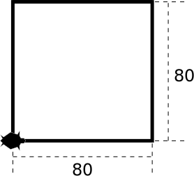
{{ Un carré de côté 80 | A square of side 80 }}
Exerci{{c|s}}e 4{{ |}}: {{ La maison | The house }}
{{
Plus difficile, une maison :
|
More difficult, a house:
}}
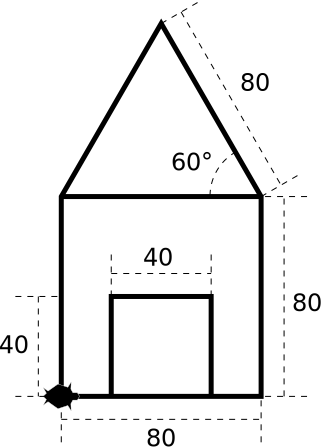
{{ La maison | The house }}
{{ Si tu as du mal avec les angles, voici quelques schémas qui peuvent t'être utiles :
| If you struggle with angles, here are some drawing that can be handy: }}
({{cliquez sur l'image pour passer à l'image suivante|click on the image to see next image}})
{{Quelques calculs d'angles et de longueur|Some angle and length computations}} — {{cliquez sur l'image pour passer à l'image suivante|click on the image to see next image}}
{{Tu peux également écrire speed(10) au début de ton code pour que la tortue aille plus vite.
|You can also write speed(10) at the beginning of your code so that the turtle will move faster. }}
{{ Petite question, quelles lignes de code doivent changer pour que la porte soit plus haute ?
| Small question, which lines of code you have to change so that the door is higher? }}
{{ Sauve ce code dans un nouveau fichier pour pouvoir le réutiliser plus tard !
| Save this code in a new file to reuse it afterwards! }}
{{ Attention à bien finir le nom par .py comme sur l'image.
| Be careful to end the filename with .py like on the picture. }}
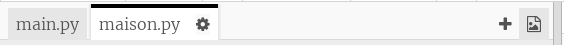
{{ Plusieurs fichiers | Multiple files }}
{{Un stylo dessinant une ligne|A pen drawing a line}}
{{
La nouvelle commande penup(), raccourci pu() ou up(),
permet de lever le crayon, ainsi la tortue peut bouger sans dessiner.
Ensuite, pendown(), raccourci pd() ou down(), repose le crayon pour plus de dessins.
|
The new command penup(), shortcut pu() or up(),
can lift the pen up, so that the turtle can move without drawing.
We also have, pendown(), shortcut pd() or down(), to put the pen back down for more drawing.
}}
{{ Que fait ce code ? | What is this code doing? }}
fd(25)
penup()
fd(50)
pendown()
fd(25)
color
{{
La nouvelle commande color("red") (attention aux guillemets dans "red" !)
permet de changer la couleur du trait en rouge.
D'autres couleurs existent par défaut comme green, blue, yellow
et bien d'autres.
|
The new command color("red") (beware of the quotes in "red"!)
changes the color of the pen to red.
Other colors exist like green, blue, yellow
and many others.
}}
{{ Pour pouvoir indiquer toutes les couleurs existantes, on regarde dans Paint :
| To have all the existing colors, we go in Paint: }}
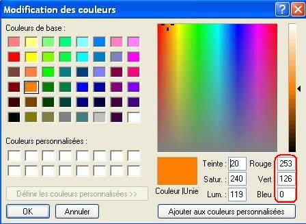
{{
Les composantes Rouge, Vert, Bleu d'une couleur, de 0 à 255.
| The Red, Green, Blue components of a color, from 0 to 255.
}}
{{ Pour ce magnifique orange, j'écrirai la commande
| For this amazing orange, I will write the command }}
color(253, 126, 0)
{{
Beaucoup d'outils donnent le code hexadécimal (code hexa) d'une couleur, par exemple j'ai un joli rose qui s'écrit #ff0060 qui peut s'insérer en écrivant
| A lot of tools give the color hexadecimal code (hex code), for example I have a nice pink written #ff0060 that can be inserted using
}} color("#ff0060") {{ou|or}} color(0xff, 0x00, 0x60).
{{ Remarque, si color(253, 126, 0) fait une erreur, écris colormode(255) au début de ton programme.
| Let's notice that, if color(253, 126, 0) gives you an error, write colormode(255) at the beginning of your program. }}
{{ Ainsi, une couleur est un mélange de rouge, vert et bleu et ces composantes sont souvent affichées sous différentes formes. Prenons mon orange favori, il peut être exprimé...
| Therefore, color is a mix of red, green et bleu and these components are often displayed in various forms. Let's take my favorite orange, it can be written... }}
¶
{{En pourcentages :|As percentages:}} 100%, 60%, 0%, {{donc 100% rouge, 60% vert et 0% bleu|meaning 100% red, 60% green and 0% blue}}.
{{En ratios :|As ratios:}} 1.0, 0.6, 0, {{les ratios sont entre 0 et 1 et sont plus mathématiques que les pourcentages.| ratios are between 0 and 1 and are more mathematical than percentages}}.
{{Avec des entiers entre 0 et 255 :|With integers ranging from 0 to 255:}} 255, 153, 0 {{vu que|because}} 153 = 60% 255 = 0.6 × 255 = 60 / 100 * 255.
{{Avec des entiers écris en hexadécimal :|With integers written in hexadecimal:}} ff, 99, 0 {{vu que 255 vaut|because 255 is}} ff {{en|in}} {{hexadécimal|hexadecimal}} {{, 153 vaut|, 153 is}} 99 {{et 0 vaut 0|and 0 is 0}}. {{On note souvent les trois entiers ff, 99, 0 en attaché sur 6 caractères avec un # devant, comme ceci : #ff9900.|Often we write the 3 integers ff, 99, 0 attached on 6 characters with a # in front, like this: #ff9900.}}
{{Et quand les deux chiffres hexadécimaux sont les mêmes pour les trois composantes on ne les répète souvent pas :|And when both hexadecimal digits for the three components are equal, one does not repeat it:}} #f90.
Exerci{{c|s}}e 5{{ |}}: {{ Deux carrés colorés | Two colored squares }}
{{ Essaie de dessiner ceci : | Try to draw this: }}
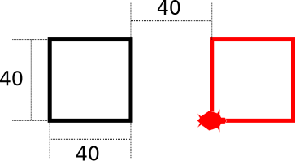
{{
Deux carrés colorés
|
Two colored squares
}}
Exerci{{c|s}}e 6{{ |}}: {{ La maison en couleurs | House in color }}
{{
Ou bien tu peux colorier ta maison, la porte en rouge et le toit en vert !
|
Or you can color your house, the door in red and the roof in green!
}}
No one needs a mouse when editing text — Robert Vanden Eynde
La souris, c'est lent, le pad c'est encore pire — Robert Vanden Eynde
{{ Voici selon moi les raccourcis clavier les plus importants pour éditer du texte, ceux-ci marchent même sur Facebook,
vous n'êtes pas obligé de les lire mais ça permet de coder super vite croyez-moi !
| Here is a list of the most useful keyboard shortcuts to edit text, those work even on Facebook,
you don't have to read them but it's useful to write code very fast trust me! }}
{{Shift (Maj.) permet d'écrire un caractère de niveau 2, comme les majuscules, ou le point sur un clavier AZERTY français.|Shift (Maj.) allows writing a Level 2 character, like the.}}
AltGr
{{AltGr permet d'écrire un caractère de niveau 3 comme le € sur un AZERTY français, on appuie dessus avec le pouce droit (⌥ sur Mac).|AltGr (Right Alt) allows writing Level 3 characters (⌥ on Mac).}}
⌫ Backspace
{{Backspace (Retour Arrière) supprime le caractère à gauche.|Backspace (Retour Arrière) deletes the character to the left.}}
Del
{{Delete (Suppr.) supprime le caractère à droite (parfois ⌃Control+D parfois Fn+⌫ sous Mac).|Delete (Suppr.) deletes the character to the right (sometimes ⌃Control+D sometimes Fn+⌫ on Mac).}}
↵
{{Enter (Entrée) passe à la ligne.|Enter (Entrée) inserts goes to the next line.}}
D'autres classiques...
Ctrl + Z
{{ Annuler | Undo }}
(⌘ + Z {{sur|on}} Mac).
Ctrl + C
{{ Copier | Copy }}
(⌘ + C {{sur|on}} Mac).
Ctrl + V
{{ Coller | Paste }}
(⌘ + V {{sur|on}} Mac).
Ctrl + X
{{ Couper | Cut }}
(⌘ + X {{sur|on}} Mac).
Ctrl+⇧Shift+Z
{{ Rétablir (opération inverse de Ctrl + Z)
| Redo (Ctrl + Z inverse operation) }}
(⌘ + ⇧ + Z {{sur|on}} Mac).
Ctrl + Y
{{ Rétablir (opération inverse de Ctrl + Z)... dans certaines applications non basées sur Linux (càd des mauvaises applications selon mon humble opinion d'ingénieur, sujet que je peux débattre).
| Redo (Ctrl + Z inverse operation)... in some applications that are not based on Linux (ie. bad applications in my humble engineer opinion, I can debate on that). }}
(⌘ + Y {{sur|on}} Mac).
{{Et maintenant, les peu connus !|And now, the ones people don't know!}}
Ctrl+→
{{
Mot suivant (⌥+→ sur Mac).
| Next word (⌥+→ on Mac).
}}
Ctrl+←
{{
Mot précédent (⌥+← sur Mac).
| Previous word (⌥+← on Mac).
}}
⇧Shift+→
{{
Sélectionner un caractère vers la droite.
| Select a character to the right.
}}
⇧Shift+←
{{
Sélectionner un caractère vers la gauche.
| Select a character to the left.
}}
Ctrl+⇧Shift+→
{{
Sélectionner un mot vers la droite (⌥+⇧+→ sur Mac).
| Select a word to the right (⌥+⇧+→ on Mac).
}}
Ctrl+⇧Shift+←
{{
Sélectionner un mot vers la gauche (⌥+⇧+← sur Mac).
| Select a word to the left (⌥+⇧+← on Mac).
}}
Ctrl+⌫
{{
Supprimer le mot précédent (⌥+⌫ sur Mac), c'est
très pratique pour supprimer plusieurs mots d'affilées, il suffit de maintenir Ctrl enfoncé et d'appuyer sur ⌫ Backspace plusieurs fois.
| Delete previous word (⌥+⌫ on Mac), it's
very handy to delete multiple words, you just have to hold Ctrl then press ⌫ Backspace multiple times.
}}
Ctrl+Del
{{
Supprimer le mot suivant (n'existe pas sur Mac), même remarque que la ligne précédente.
| Delete next word (⌥+⌫ on Mac), same note as previous line.
}}
Et également un raccourci souris : double clic sélectionne un mot (ou triple clic sélectionne la ligne).
{{ Ça marche partout même sur Facebook ! Et remarquez qu'il y a une touche Ctrl et Shift juste à côté des flèches, donc vous pouvez faire tout ces raccourcis avec uniquement la main droite !
| It works everywhere even on Facebook! And let's notice that there is a Ctrl and Shift key next to the arrow keys so all of these shortcuts can be done with the right hand only! }}
{{ En plus de ça, quelques raccourcis utiles quand vous éditez du code :
|Moreover, here are some useful shortcuts when you edit code: }}
Ctrl+D
{{ Supprimer une ligne (Ctrl Delete) | Delete a line }}
(⌘+D {{sur|on}} Mac).
Ctrl+⇧Shift+D
{{ Dupliquer une ligne | Duplicate a line }}
(⌘+⇧+D {{sur|on}} Mac).
{{ Ça marche aussi quand vous avez plusieurs lignes sélectionnées,
| It also works when you have multiple selected lines, }}
{{ ce raccourci de suppression de ligne a l'air stupide mais tu ne te doutes pas de toute la puissance cachée qu'il détient...
| this delete line shortcuts looks very silly but you have no idea how powerful it is... }}
{{ Et finalement d'autres ne marchant pas sur mon site mais que je conseille :
| And finally others that do not work on my site but that I recommend: }}
Ctrl+⇧Shift+↑
{{ Déplacer la ligne vers le haut
| Move line up }}
(⌘ + ⇧ + ↑ {{sur|on}} Mac).
Ctrl+⇧Shift+↓
{{ Déplacer la ligne vers le bas
| Move line down }}
(⌘ + ⇧ + ↓ {{sur|on}} Mac).
{{ Et vraiment finalement, tant que j'y suis, voici mes raccourcis du navigateur internet (j'♥ les onglets) :
| And really finally, while you're still here, here are my browser shortcuts (I ♥ tabs): }}
Ctrl + T
{{ Nouvel onglet (puis je tappe ma recherche)
| New tab (then I write my search) }}
(⌘ + T {{sur|on}} Mac).
Ctrl + L
{{ Mettre le focus sur la barre d'addresse (Ctrl Location)
| Focus location bar }}
(⌘ + L {{sur|on}} Mac).
Ctrl + W
{{ Fermer l'onglet (parfois ça m'arrive)
| Close tab (sometimes, it happens) }}
(⌘ + W {{sur|on}} Mac).
Ctrl+⇧Shift+T
{{ Ré-ouvrir le dernier onglet fermé
| Reopen last closed tab }}
(⌘+⇧+T {{sur|on}} Mac).
Et je pourrais encore parler de l'art de l'Alt-Tabbing moderne, du Control-Tabbing, du setting firefox pour l'Alt-Tabbing et son AltPageUp en main libre, du bouton Home, de la stupidité de la touche NumLock et CapsLock sous Windows, ou du déplacement furtif de fenêtres via Windows+←↓↑→.
{{
Afin de réutiliser du code, on peut le mettre dans une fonction. Par exemple, je vais faire une fonction carre qui permet de dessiner un carré.
|
In order to reuse some code, we can put it in a function. For instance, I will write a function square that allows me to draw a square.
}}
{{
Écris le code ci-dessus et puis la nouvelle instruction carre() sera disponible ! Écris le code ci-dessous ensuite.
|
Write the code above and then the new instruction square() will be available! Then write the code below.
}}
{{
On peut également mettre des paramètres à la fonction, grâce à ça on pourra faire varier une certaine partie du code, comme par exemple, la taille du carré.
|
We can also add parameters to the function, thanks to them we can vary some part of the code, like the size of the square.
}}
def {{carre|square}}({{t|s}}): # {{t est la taille|s is the size}}
fd({{t|s}})
lt(90)
fd({{t|s}})
lt(90)
fd({{t|s}})
lt(90)
fd({{t|s}})
lt(90)
{{ Que l'on utilisera comme ceci :
| We will use it like this: }}
{{ Le paramètre t peut s'appeler comme on veut,
| You can name the s parameter as you want, }}
{{que ça soit|like}} {{t|s}}, {{taille|size}}, x, a {{ou|or}} {{taille_cote|side_size}}.
{{ On peut mettre autant de paramètres que l'on veut, séparés par des virgules, comme def carre(taille, couleur).
| We can add all the parameters we want, separated by commas, like def square(size, the_color). }}
{{ On peut faire des opérations mathématiques comme 50 + taille * 2 - (taille - 1), attention à la priorité des opérations !
| We can do some maths like 50 + size * 2 - (size - 1), be careful of the priority of operations! }}
{{ Un petit raccourci clavier pour décaler des lignes vers la droite : sélectionnez les lignes en questions et appuyez sur
| A little keyboard shortcut to shift lines to the right: select the lines you want to shift and hit }}
Tab ↹.
{{ L'opération inverse est disponible via
| The reverse operation can be done via }}
⇧Shift+Tab ↹.
Exerci{{c|s}}e 8{{ |}}: {{ Modèles de maison | House patterns }}
{{Le code de la maison se trouve ici, met le dans une fonction à deux paramètres pour pouvoir effectuer une maison colorée en une ligne :
| You can find the code of the house here, put in in a function
with two parameters so that you can draw a house with one line: }}
{{ Les deux paramètres sont la hauteur et la couleur de la porte.
| The parameters are the height and the color of the door. }}
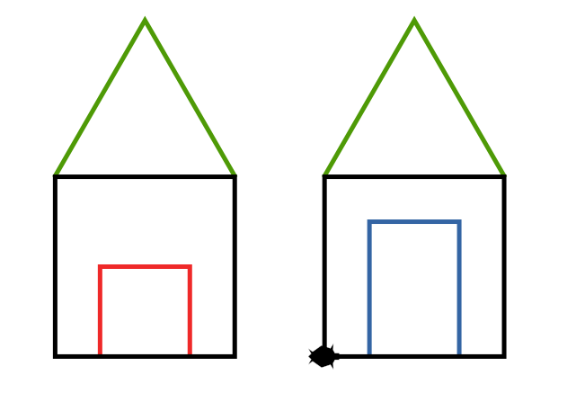
{{
Deux maisons différentes
|
Two different houses
}}
{{
Dans le code du carré, on avait quatre fois le même code à la suite :
|
In the code for drawing a square, we have four times the same code in a row
}}
{{
Il existe une instruction qui permet de dire Répète 4 fois ce qui suit, c'est le for :
|
There exists an instruction that gives you the opportunity to say Repeat 4 times what follows, it's the for:
}}
for i in range(4):
fd(40)
lt(90)
{{
Attention à ne pas oublier le :, de passer à la ligne et d'écrire au moins une instruction.
|
Be careful to not forget the :, to enter a new line and to write at least one instruction.
}}
{{
Quelle va être la différence avec le code suivant ? La seule différence est l'absence de quelques caractères espace mais ça change complètement le résultat. Teste le et comprends pourquoi le résultat affiché correspond bien au code.
|
What will be the difference with the following code? The only difference is the absence of few space characters but it changes the result a lot! Test it and understand why the rendered result corresponds to the code.
}}
for i in range(4):
fd(40)
lt(90)
Exerci{{c|s}}e 9{{ |}}: {{ L'hexagone | The hexagon }}
{{
Essaie de dessiner un hexagone, n'hésite pas à utiliser le for pour simplifier ton code !
|
Try to draw an hexagon, do not hesitate to use the for to simplify your code!
}}
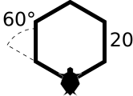
{{ Géométrie d'un hexagone | Geometry of an hexagon }}
Exerci{{c|s}}e 10{{ |}}: {{ Des triangles | Some triangles }}
{{
Fais une fonction triangles, qui va dessiner la forme suivante, ajoute les paramètres taille et couleur afin de pouvoir l'appeler comme ceci :
|
Write a function triangles, that will draw the following shape, add the parameters size and the_color in order to call it like this:
}}
triangles(20, "red")
{{
Utilise les boucles et cette figure peut se faire en moins de 10 lignes !
|
With the help of loops, this figure can be drawin in less than 10 lines!
}}
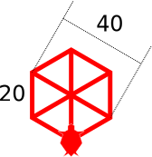
{{ Des triangles dans un hexagone || Some triangles in an hexagon }}
Exerci{{c|s}}e 11{{ |}}: {{ Le village | The village }}
{{
Utilise les boucles et ta fonction maison pour créer facilement un village à deux rues comme ceci :
|
Use loops and your house function to create easily a village with two streets like this:
}}
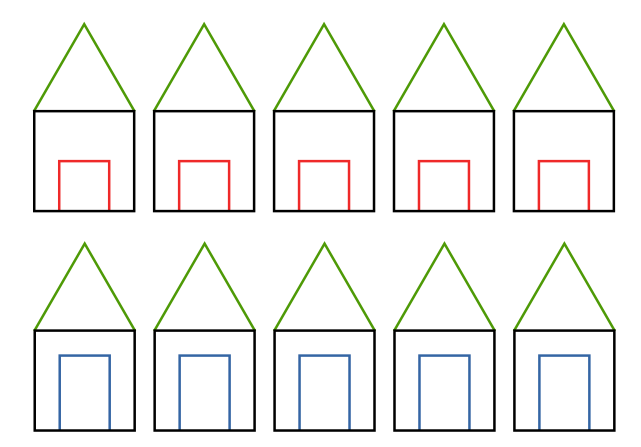
{{ Un village à deux rues | A village with two streets }}
{{
Dernier défi pour ce cours, laisse aller ton imagination pour créer un beau dessin !
|
Last challenge for that course, let your imagination go to create a nice drawing!
}}
{{
Voici le mien, il utilise ma fonction triangles plusieurs fois !
|
Here's mine, it uses my function triangles multiple times!
}}
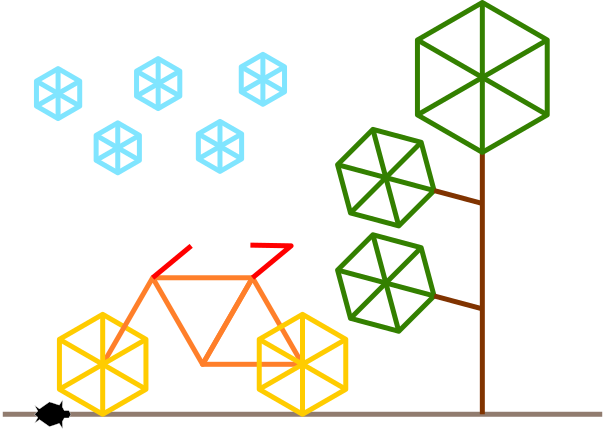
{{ Un dessin avec un vélo, un arbre et des nuages | A drawing with a bike, a tree and some clouds! }}
{{
Voilà, nous avons appris à utiliser turtle en programmant en langage python.
|
It's over, we have learned to use turtle by programming in the python language.
}}
{{
Voici un aperçu d'autres fonctionnalités turtle/python.
|
Here is an overview of other turtle/python functionalities.
}}
{{
On peut créer plusieurs tortues (objets python) :
|
We can create multiple turtles (python objects):
}}
bob = Turtle() # {{ou|or}} Pen()
bob.shape("turtle")
bob.color("blue")
bob.forward(50)
alice = Turtle()
alice.shape("turtle")
alice.color("green")
alice.fd(100)
{{
Et créer des variables en fonction de la tortue.
|
And create variables dependent of the turtle.
}}
bob.d{{e|is}}placement = 5
alice.d{{e|is}}placement = 10
def {{avancer_en_traits|forward_with_dashes}}({{tortue|the_turtle}}):
for i in range(3):
{{tortue|the_turtle}}.penup()
{{tortue|the_turtle}}.fd({{tortue|the_turtle}}.d{{e|is}}placement)
{{tortue|the_turtle}}.pendown()
{{tortue|the_turtle}}.fd({{tortue|the_turtle}}.d{{e|is}}placement)
bob.lt(90)
alice.lt(90)
{{avancer_en_traits|forward_with_dashes}}(bob)
{{avancer_en_traits|forward_with_dashes}}(alice)
{{
Ou créer des listes de tortues :
|
Or create list of turtles:
}}
{{liste|the_list}} = [bob, alice]
charles = Turtle()
charles.shape("turtle")
charles.d{{e|is}}placement = 7
liste.append(charles) {{# ajouter à la fin|}}
for {{tortue|the_turtle}} in {{liste|the_list}}: # {{ pour chaque tortue dans la liste | for every turtle in the list }}
{{ancienne_couleur|previous_color}} = {{tortue|the_turtle}}.color() #{{ on sauve la couleur | we save the color }}
{{tortue|the_turtle}}.color("blue")
{{avancer_en_traits|forward_with_dashes}}({{tortue|the_turtle}})
{{tortue|the_turtle}}.color({{ancienne_couleur|previous_color}}) #{{ on réapplique l'ancienne couleur | we restore the prevous color }}
{{
Ou encore créer des conditions pour changer de logique :
|
Or write conditions to change the logic:
}}
penup()
fd(-100)
n = 0
for i in range(45):
penup()
fd(20)
pendown()
fd(20)
n = n + 1
if n == 4:
right(90)
color("red")
else:
if n == 7:
right(90)
color("blue")
else:
if n == 9:
right(90)
n = 0
Exerci{{c|s}}e 13{{ |}}: {{ Le village variable | The variable village }}
{{ Essaie de faire des tailles variables :| Try to make houses with variable sizes: }}
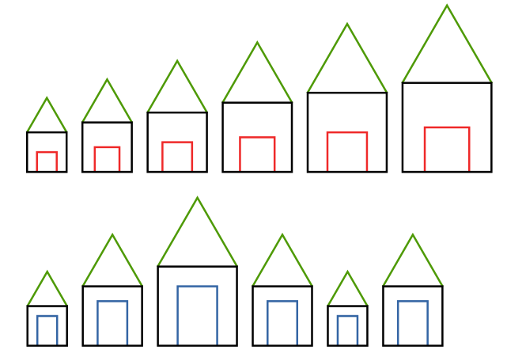
{{ Un village avec des maisons de toutes les tailles | A village with a lot of different house sizes }}
{{
Au revoir et pour toute question, je suis disponible par mail via robertvandeneynde[at]hotmail.com
|
Bye bye and for any question, I'm available by mail via robertvandeneynde[at]hotmail.com
}}
 {{English here!|Français ici !}}
{{English here!|Français ici !}}
{kind=link}


{kind=link}